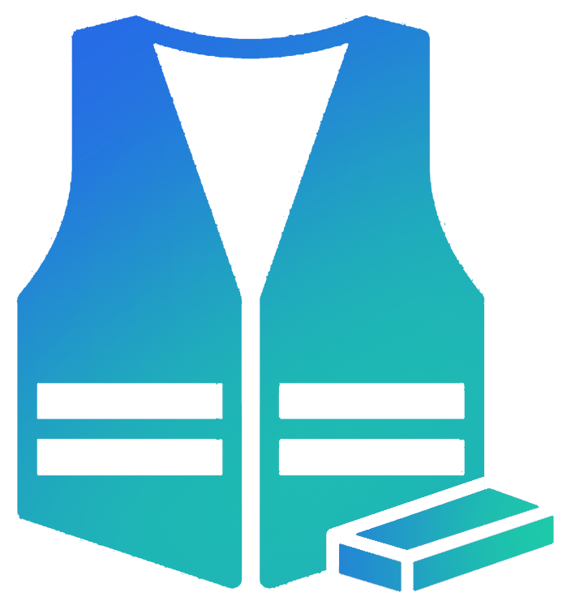

About the Project
Our mission is to reduce hospital stays by enabling safe, remote monitoring for low-risk patients.
12%
Reduction in Hospital Stays
85%
Patient Satisfaction
€300M
Annual Savings Potential

Problem Definition
Long hospital stays increase the risk of infection, strain hospital resources, and overburden medical staff.
- Hospital Stay Duration: People who remain hospitalized after clinical discharge represent almost 12% of total hospitalizations in the portuguese public healthcare system.
- Elderly Patients: Patients over 65 years old represent 74% of people with prolonged hospital stays in public healthcare.
- Infection Risks: Currently, in Portugal, there's a 9.9% chance of a patient contracting an healthcare associated infection.
- Cost Burden: Extended hospital stays could cost the State almost 300 million euros in a single year.
Who Benefits?
Public and private hospitals can optimize bed availability, while patients experience safer recovery at home.
- Hospitals: Improved bed turnover, reduced re-admissions, and decreased costs related to preventable complications.
- Patients: Increased cost savings on hospital expenses, reduced exposure to hospital-acquired infections.
- Medical Staff: Less stressful shifts, allowing healthcare professionals to dedicate more time to critical patients.
- Healthcare System: Potential to save millions of euros annualy by optimizing patient discharge processes and monitoring.
Our Solution
A wearable vest with sensors, continuous monitoring, and seamless real-time communication.
- Wearable Technology: Real-time monitoring of heart rate, temperature, fall detection, oxygen levels, and patient's movement.
- Wireless Communication: Secure data transmission via Wi-Fi, Bluetooth, and cellular networks.
- Emergency Response: The system includes an SOS button, allowing patients to request immediate medical attention.
- Scalability & Integration: Can be integrated into existing hospital monitoring systems, ensuring a seamless transition.